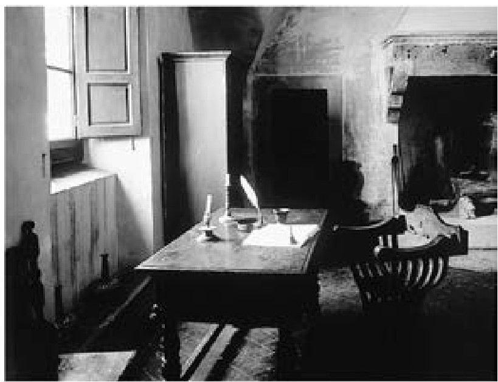

写完《论罗马史》之后不久，时运的轮子突然转向，马基雅维里终于得偿所愿，被美第奇家族看中了。马基雅维里曾在1516年朱利亚诺死后将《君主论》献给洛伦佐·德·美第奇，三年之后洛伦佐突然身亡，接替他掌管佛罗伦萨大权的是他表弟红衣主教朱利奥（他很快就当选教皇，即克雷芒七世）。红衣主教碰巧与马基雅维里的密友洛伦佐·斯特罗齐（后来马基雅维里的《战争的艺术》就是题献给他的）是亲戚。由于这层关系，1520年3月马基雅维里被引荐进入美第奇宫廷，很快他就听到风声，自己可能获得某个职位（虽然是文学而非外交性质）。这次他没有失望，同年11月他获得美第奇家族的官方授命，负责撰写佛罗伦萨史。
马基雅维里的余生几乎都在创作这部《佛罗伦萨史》。这是他最长也是最从容的著作，也只有在这部作品中，他才最严谨地遵循了自己喜爱的古典权威作家的创作规范。古典（也可以说人文主义）历史编纂学的两条基本箴规是，历史著作应当讲授道德教训，史料的选择和组织也应最大限度地突出这些教训。例如萨卢斯特就曾在著名的段落中阐述这两条原则。他在《朱古达战争》中提出，史家的目标必须是以“有用”和“有效”的方式反映过去（IV.1—3）。在《喀提林阴谋》中，他进一步推论道：史家的正确方法只能是“选择值得记录的材料”，而不是提供一份完整的编年记录（IV.2）。

图5 马基雅维里故居（位于佛罗伦萨以南的佩尔库西纳的圣安德里亚）书桌，1513年他就是在此撰写《君主论》的。
马基雅维里一丝不苟地遵行了上述要求，这在他处理记述的过渡段落和高潮部分时体现得尤为明显。例如第二卷的结尾，就是以道德说教的方式讲述了雅典公爵如何于1342年成为佛罗伦萨的僭主，又如何于次年被赶下台。第三卷在简单勾勒了此后半世纪间的情况后，迅速跳到了下一个有道德启示意义的事件——1378年齐昂比的叛乱。与此相似，第三卷结尾描述的是1378年革命之后的反应，第四卷开篇却越过40年的缺口，直接讨论美第奇家族如何上台。
人文主义历史写作还有一条规则是，为了让读者牢记这些最有益的教训，史家必须锻造出一种引人入胜的修辞风格。正如萨卢斯特在《喀提林阴谋》的开头所说，史书的特别挑战在于，“风格与措辞必须与记录的事件相配”（III.2）。马基雅维里同样严肃地追求这种理想效果，他甚至在1520年夏天决定为史书创造一种风格“模型”。他在奥里切拉利花园的朋友中间传阅自己的草稿，希望听取他们对写作风格的意见。他选择的题目是给卡斯特鲁乔·卡斯特拉卡尼（14世纪初卢卡的僭主）作传。但他并不太关心卡斯特鲁乔的生平细节——有些干脆就是他编造的，而更注意用一种雅正且富教益的方式选择和连缀材料。开篇关于卡斯特鲁乔出生的记述是虚构的，他并非弃儿，但这让马基雅维里有机会庄严地议论一番时运在人类事务中的力量（533—534页）。在接受了神父的教育之后，年轻的卡斯特鲁乔开始“勤于学习使用武器”，马基雅维里又借机讨论了一个经典话题：文学和军事孰轻孰重（535—536页）。这位僭主临终前悔过的演说同样遵循了古代最优秀史书的写法（553—554页）。故事末尾还辑录了卡斯特鲁乔的许多隽语，其实这些话多半是出于修辞效果的考虑，从第欧根尼·拉尔修的《名哲言行录》中直接偷来的（555—559页）。
当《卡斯特鲁乔传》交到朋友阿拉曼尼和布昂德蒙提手中时，他们已知道马基雅维里有写一本历史巨著的打算，所以都把它当作某种“预演”。布昂德蒙提在1520年9月的回信中，称这篇传记是“你未来史书的样本”，因此他认为最好“主要从语言和风格的角度”来评论马基雅维里的手稿。他盛赞文中最富修辞效果的段落，说那段编造的临终演说“尤其”让他喜欢。他接下来所说的一定是马基雅维里最想听的，因为他正准备到这个文学的新领域探险：“我们都认为，你现在就应该全力以赴，创作你的《历史》了。”（《书信集》394—395页）
几个月后，当马基雅维里着手撰写《佛罗伦萨史》时，上述风格技巧全被他精心编织进去了。这本书构思缜密，妙语连珠，结构对称，节奏铿锵，他政治学说的主要观点披上修辞的华裳，悉数登场。例如第二卷中，一位执政 [61] 面对雅典公爵，就“自由之名”慷慨陈词：“没有力量能摧毁它，没有时间能侵蚀它，没有任何利益能与它抗衡。”（1124页）下一卷中，一位普通公民在执政团面前发言，讨论德性与朽败，呼吁每位公民在任何时候都为公共利益服务，同样文采飞扬，激情四溢（1145—1148页）。第五卷中，里纳尔多·德利·阿尔比兹为了争取米兰公爵的支持，对抗美第奇家族扩张的势力，又献上了一篇关于德性与朽败的精彩演说，声称爱国的义务就是效忠“平等地爱所有公民”的城邦，而不是“对极少数人卑躬屈膝，却无视其他所有人”的城邦（1242页）。
人文主义者从古典权威作家那里学到的最重要一课是，史家必须关注祖先最杰出的成就，以鼓励后人效仿他们最崇高、最光荣的行为。虽然古罗马的伟大史学家普遍比较悲观，并且经常感叹世界不断朽败，但他们反而因此更加热烈地履行纪念美好过去的责任。正如萨卢斯特在《朱古达战争》中所说，只有让“伟大事迹的记忆”长存，我们才能在“崇高人们的胸中”点燃这样一种雄心，“它一旦开始燃烧，便永远不会熄灭，除非他们的德性终于能够与先祖的荣名媲美”（IV.6）。而且，文艺复兴时期的人文主义者在研究李维、萨卢斯特和其他古罗马作家的时候，感受最深的便是史家事业的这种颂赞的特性。例如，国务厅长官波焦·布拉乔利尼在1450年代完成的《佛罗伦萨人民史》的献词中，便显然是按此思路讨论历史功用的。他说，“信史的最大益处”在于“我们可以看到最杰出的人物凭着德性可以成就怎样的事业”，可以知道“对荣耀的渴望，对祖国自由的珍视，对子孙福祉的关心，对神灵和一切仁善之事的爱”如何鼓舞他们行动。最后，我们自己也因他们的光辉榜样而“热血沸腾”，“仿佛他们亲自在鞭策我们”赶超他们 [62] 。
毫无疑问，马基雅维里完全熟悉人文主义历史书写的这一面，他在《佛罗伦萨史》序言中甚至称赞了波焦的著作（1031页）。然而到了这里——在如此谨严地模仿了人文主义写法的每一步之后——他突然打破了此前为读者建立起的心理期待。在第五卷篇首，当他开始考察上世纪佛罗伦萨的历史时，他宣称，“我们的君主所行之事，无论在国外还是国内，都无法像古人那样，因为德性卓越、影响深远而供人在仰慕中阅读”。我们无法“讲述士兵的英勇，将军的德性或者公民对祖国的爱”，只能描绘一个日益朽败的世界，只能看见“君主、士兵、共和国的首脑，为了保住他们根本配不上的名声，用尽阴谋诡计做各自的事”。这样，马基雅维里就通过精心设计，彻底颠覆了关于历史功用的流行见解：讲述故事不是为了“激励自由心灵去效法前人”，相反，他的目的是“警告这些心灵避免和消灭当今的种种恶行”（1233页）。
因此，整部《佛罗伦萨史》的中心议题是衰亡。第一卷描绘了西罗马帝国的灭亡和蛮族进入意大利。第一卷末尾和第二卷开头描绘了“罗马废墟上出现的新城市、新国家所显示出的非凡德性”，“它们解放了意大利，保护她不被蛮族霸占”（1233页）。但这有限的成功只持续了很短时间，剩下的故事（从第二卷中间部分到第八卷）在马基雅维里笔下是一部日益朽败和溃灭的历史。他的叙述终结于1490年代，最低谷是1494年，意大利遭受了最极端的羞辱，曾经被她赶跑的蛮族“却反过来让她做了奴隶”（1233页）。
贯穿《佛罗伦萨史》的主题是朽败。马基雅维里描述了它的可怕魔爪如何攫住了佛罗伦萨，扼杀了它的自由，最终将它推入了专制和屈辱之中。他基本沿用了《论罗马史》的思路，指出了朽败因素最容易滋生的两个主要领域。他在序言中做了相应区分后，便用它们来组织全书的叙述。首先，在处理“外部”政策时，永远存在朽败的危险，主要的症状就是在军事决策上越来越犹豫、怯懦。第二，在“内部事务”中也存在相似的危险，朽败的扩散主要体现为“公民之间的争斗与敌对行动”（1030—1031页）。
马基雅维里在第五卷和第六卷讨论了前一个方面，也就是佛罗伦萨处理外部事务的历史。然而，他没有像在《论罗马史》中那样，详细分析城邦的战略失算与错误。他只是满足于用嘲讽的口气展示佛罗伦萨在军事上的无能。这允许他在保持人文主义史书通行模式（永远浓墨重彩地描绘著名战役）的同时揶揄它们的内容。马基雅维里的战争场景特写有一个独特之处：他描写的战斗都极其可笑，毫不激烈，更谈不上光荣。例如，他写到扎哥纳拉战役 [63] （1424年进攻米兰的首战）时，首先评论称，这在当时被视为佛罗伦萨的一次惨败，“消息传遍了意大利”；然后补充说，只有三名佛罗伦萨人阵亡，“他们坠马后，淹死在泥浆里”（1193页）。后来记述1440年佛罗伦萨人在安吉亚里的著名大捷 [64] 时，他同样用了讽刺的笔法。据他说，在这场漫长的战斗中“只死了一个人，而且他既没受伤，也没英勇地承受敌人一击，而是掉下马被踩死的”（1280页）。
书的其余部分回顾了佛罗伦萨在内部事务方面日益朽败的可悲历程。在第三卷开头转向这个话题时，马基雅维里明确指出，他所说的内部朽败（和《论罗马史》中的说法一致）指的是城邦法律和制度“不为公共利益设计”，却为个人或派系牟利（1140页）。他批评此前的著名史家布鲁尼和波焦在他们各自撰写的佛罗伦萨史中没能注意到这个危险（1031页）。他提出，自己如此关注这个话题，是因为当一个共同体失去这方面的德性后，随之而来的内斗“会导致城邦中出现各种灾难”，佛罗伦萨的悲剧已经是雄辩的证明（1140页）。
最开始，马基雅维里承认，任何城邦永远都会有“平民和贵族之间天然的、严重的对立”，因为“后者希望统治，而前者拒绝被统治”（1140页）。和《论罗马史》的立场一样，他绝不认为所有这样的对立都应当避免。他重申了以前的观点：“有些纷争伤害共和国，有些纷争却于国有益。有害的纷争伴随着派系和集团，有益的纷争却没有派系和集团的操控。”所以，明智立法者的目标不是“彻底消灭对立”，而只应当确保“没有派系”从不可避免的对立中产生（1336页）。
然而在佛罗伦萨，内部纷争却总是“以派系为基础”发展起来的（1337页）。结果它就堕入了不幸共同体的行列，仿佛遭受天谴，在同样悲惨的两极之间震荡，“不是在自由与奴役间”变换，而是“在奴役和放纵间”交替。平民是“放纵的制造者”，贵族是“奴役的制造者”。城邦因而无助地来回摇摆，“从专制倒向混乱，又从混乱倒向专制”，两个对立集团的敌人都很强大，任何一方都无法长期维持稳定的局面（1187页）。
在马基雅维里看来，13世纪以来佛罗伦萨的历史就在这两个极端之间疾速冲撞，城邦和它的自由最终都裂成了碎片。第二卷从14世纪初贵族掌权开始落笔。这一局面直接导致了1342年雅典公爵的专制统治，当时公民们“眼见政府的威严被摧毁，习俗被扫荡，法律被废除”（1128页）。于是他们奋起反抗，赶走了僭主，成立了自己的平民政府。但正如马基雅维里接下来在第三卷所讲，民主又堕落成了放纵，“毫无节制的暴民”于1378年成功地控制了共和国政府（1161—1163页）。然后钟摆又滑回了“平民派背景的贵族”手中，到了15世纪中期，他们企图重新限制人民的自由，于是逐渐发展出一种新的专制统治（1188页）。
的确，进入书的最后阶段（第七卷和第八卷），马基雅维里在论述时变得更含蓄，更谨慎。这部分的中心内容无可避免地是美第奇家族的上台，他明显觉得，既然是这个家族授命他创作这部史书的，他在评价他们时就不能太严厉。虽然他花了很多功夫掩饰自己的敌意，但如果我们把他刻意分开的一些论点连缀起来，其实很容易发现他究竟怎样看待美第奇家族在佛罗伦萨历史上的作用。
第七卷开头，他在一般意义上讨论了上层公民腐蚀民众，进而发展派系，为自己夺取绝对权力的阴险手段。这个问题他在《论罗马史》中已经详尽分析过了，马基雅维里基本上只是在重申以前的观点。最大的危险是容许富人用财富笼络一批人，“让他们出于个人私利”而不是公共利益“成为自己的拥趸”。他还说，主要有两种手段实现这一目的。一是“向许多公民施恩，在官长面前保护他们，给他们提供经济帮助，帮他们谋得不该得的权位”。二是“用公共娱乐和公开馈赠来讨好民众”，通过奢侈的展示来制造出自己深受欢迎的假象，诱骗他们放弃自由（337页）。
如果我们脑海里装着上述分析来读《佛罗伦萨史》的最后两卷，就不难发现在马基雅维里对历届美第奇政府的热烈吹捧下面潜藏的反感。他首先记述的是科西莫。在第七卷第五章，他献上了一篇辞藻精美的颂词，尤其夸赞他“不仅权财”盛极一时，“而且慷慨”也“胜过了同时代其他人”。然而，马基雅维里的用意很快就显明了：科西莫死时，“整个城邦中没有一位头面人物不曾从他手里借过巨资”（1342页）。这种刻意慷慨的阴险含义，读者已经不陌生了。接下来，马基雅维里讲述了科西莫之子皮耶罗·德·美第奇短暂的政治生涯。开始他被形容为“仁善正直”，但我们很快得知，为了沽名钓誉，他举办了一系列奢华壮观的骑士比武赛和其他庆典，筹备和表演就让全城忙了数月（1352页）。和前面的例子一样，我们也已经知道这些取悦民众的行为有何危害。最后，当马基雅维里写到“荣耀者”洛伦佐的执政期（也是他自己的青年期）时，他几乎已不再费力抑制涌动的憎恶之情。他宣称，到了这个阶段，“时运”与美第奇家族的“慷慨”已彻底败坏了民心，对于推翻美第奇专制的呼声，“民众充耳不闻”，于是“自由从此在佛罗伦萨销声匿迹了”（1393页）。
尽管佛罗伦萨已复辟专制，蛮族也已卷土重来，马基雅维里仍能安慰自己，至少意大利逃脱了最可怕的羞辱。虽然蛮族取胜了，他们还未能屠戮意大利任何一座引以为豪的名城。他在《战争的艺术》中说，托尔托纳虽被攻占，“米兰没有”；“卡普阿丢了，那不勒斯没丢”；“布雷西亚毁了，威尼斯没毁”；最重要的、最具象征意义的是“拉韦纳失陷了，罗马还在”（624页）。
马基雅维里本不该如此乐观地向时运女神挑衅。1527年5月，不堪想象的事发生了。1525年，法国惨败于神圣罗马帝国之手 [65] ，被迫割让在意大利的领地；次年，法王弗朗索瓦一世心怀鬼胎地订立了一个同盟 [66] ，以夺回失地。为了应对新的挑战，1527年春查理五世下令军队重新开进意大利。然而，由于士兵没领到军饷，纪律败坏，结果他们没有进攻任何军事目标，却直接攻入了罗马。5月6日进入这个不设防的城市之后，他们一连屠杀劫掠了四天，震动了整个基督教世界。
罗马已沦陷，克雷芒只好逃命。失去教皇的支持，日益不受欢迎的美第奇政府迅速倒台。5月16日，城邦议事会召开，宣布恢复共和政体，翌日清晨年轻的美第奇权贵们便骑马逃出城去，自动流亡了。
马基雅维里从来就坚定地支持共和，如今佛罗伦萨恢复了自由政府，他本该扬眉吐气了。然而，由于他与美第奇家族的联系（过去六年他一直在领取薪水），在年轻一代的共和派看来，他不过是一名曾寄食于可耻专制政权的老头罢了。虽然他似乎抱有重回第二国务厅的希望，但在反美第奇的新政府里是没他容身之地的。
这种难堪的处境可能让他深受打击，很快他就患上了重病，且一病不起。多数给他作传的人都说，他曾叫来一位神父听他的临终忏悔，但这无疑是信教者后来的杜撰。终其一生，马基雅维里都鄙夷教会的仪式，没有证据表明他死前改变了态度。6月21日，他在家人朋友的陪伴下离世，翌日葬于圣克罗齐教堂。
事实证明，马基雅维里比其他任何政治理论家都更有魔力，人们没法抵抗住诱惑，没法不追赶到坟墓的另一面，去总结和评判他的哲学。他刚辞世，这一过程便开始了，今天仍未结束。最早评价马基雅维里的一批人，例如弗朗西斯·培根，尚能承认“我们应感谢马基雅维里等人，他们所描绘的是人实际的样子，不是他们理想的样子”。但马基雅维里同时代的读者大多对他的观念极为震惊，直接给他贴上魔鬼后裔的标签，甚至把他视为魔鬼本身。相比之下，今日大多数马基雅维里的评注者在面对他最耸人听闻的教义时，也能以一种见惯不惊的宽容淡然处之。但仍有一些人，尤其是列奥·施特劳斯 [67] 及其信徒，仍毫不妥协地坚持传统的评价，认为（施特劳斯本人的说法）马基雅维里只能被称作“邪恶的教唆者”。
然而，史家的职司当然是做记录的天使，而不是杀人的法官。所以，我在本书中所做的只是重觅过去，并把它呈给现在，而不力图用今天的标准去褒贬过去，因为这些标准既受视阈所限，也无永恒效力可言。马基雅维里墓碑上的文字骄傲地提醒我们，“任何墓志铭都配不上如此的荣名”。